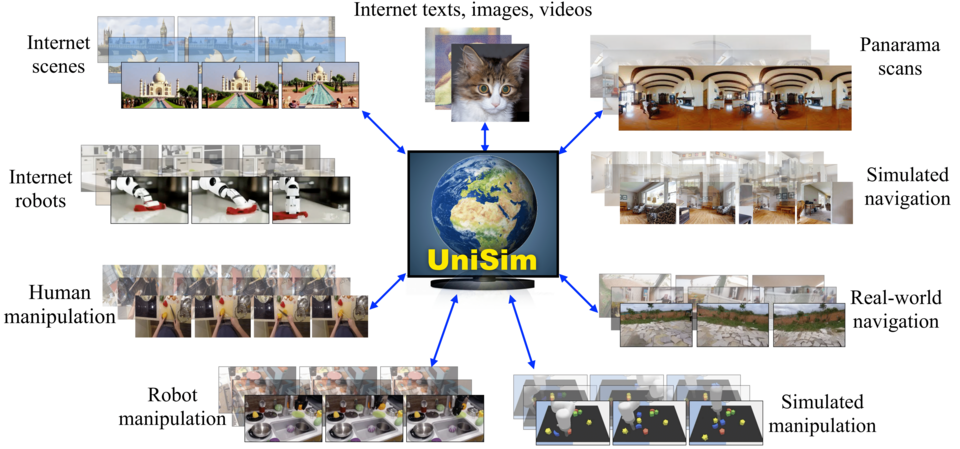
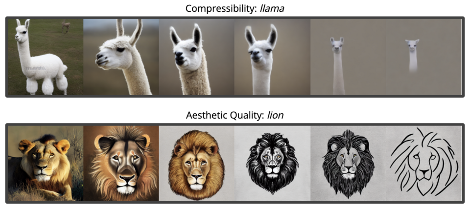
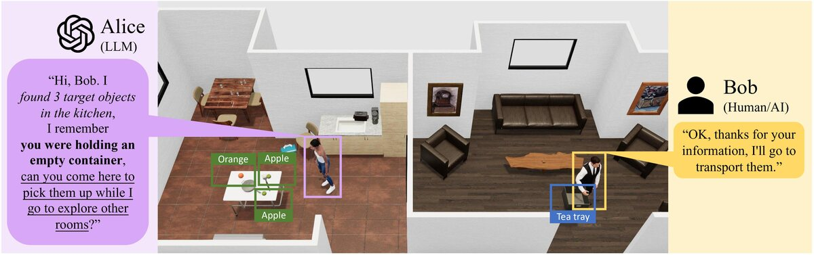

Video Language Planning
ICLR 2024
vlp.mp4
9 media files grouped by the listed publication venue and year.
9 of 9
ICLR 2024
vlp.mp4

ICLR 2024 · Spotlight
avdc_teaser.png

ICLR 2024 · Outstanding Paper Award
unisim.png

ICLR 2024 · Spotlight
compinvdesign.png
ICLR 2024
adaptation.mp4

ICLR 2024
rldiffusion.png
ICLR 2024
24_manifold_preview.mp4

ICLR 2024
collm.jpg
ICLR 2024
24_hazard_preview.mp4
No matches.